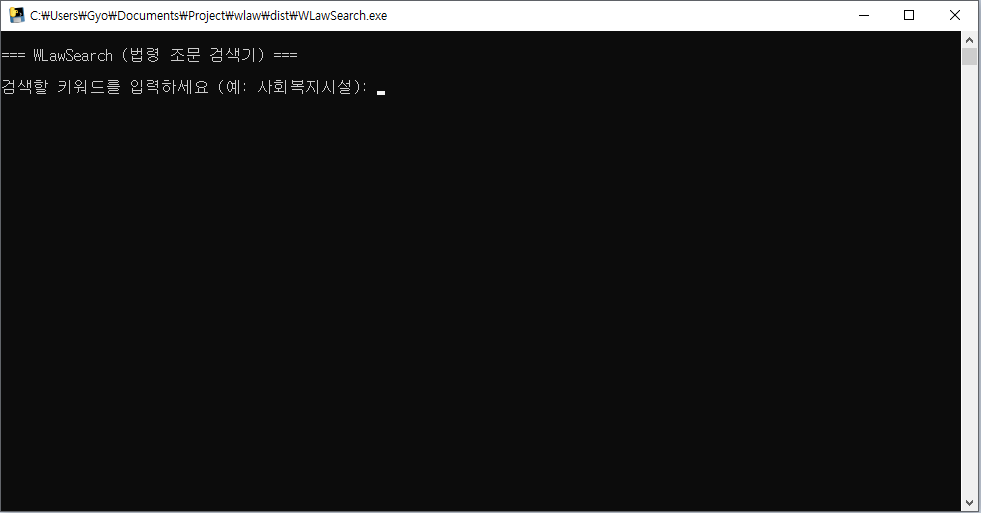

특정 법령 내에서 내가 찾는 키워드가 포함된 조문만 골라내는 작업이 더 이상 어렵지 않습니다. WLawSearch는 국가법령정보센터의 데이터를 직접 조회하여 모든 검색 결과를 체계적으로 정리해 드립니다.
🔍 실시간 키워드 검색
법령 제목과 키워드를 입력하면 관련 조문 내용을 즉시 수집합니다.
📊 다양한 내보내기 형식
Excel(.xlsx), CSV, JSON 파일은 물론 구글 스프레드시트 연동까지 지원합니다.
🔄 중단 없는 연속 최적화
수천 개의 조문도 대기 시간 없이 안정적으로 검색하고 처리합니다.
시작하기 (사용 방법)
- 프로그램 다운로드: 아래 버튼을 클릭하여 ZIP 파일을 다운로드하고 압축을 해제합니다.
- OC(API ID) 발급: 국가법령정보센터 Open API 사이트에서 '인증키 신청'을 통해 OC ID를 발급받습니다. (이메일 인증 후 즉시 확인 가능)
- 프로그램 실행:
WLawSearch.exe를 실행합니다. - 검색어 설정: 검색할 키워드(예: 사회복지시설, 노유자시설)를 입력합니다.
- API 인증: 최초 실행 시 발급받은 OC ID를 입력합니다.
- 결과 확인: 프로젝트 폴더 내
output폴더에서 생성된 파일을 확인합니다.
⚠️ 바이러스 오진 관련 안내
본 프로그램은 파이썬 코드를 윈도우 실행파일(.exe)로 변환하는 과정에서 백신 프로그램(Avast 등)이 바이러스로 오인하여 차단하는 경우가 발생할 수 있습니다. 이는 배포자 정보가 등록되지 않은 독립 실행형 파일에서 흔히 발생하는 현상이며, 시스템에 유해한 코드는 포함되어 있지 않으니 안심하고 '실행' 또는 '제외 설정' 후 사용해 주시기 바랍니다.

실제 프로그램 실행 인터페이스